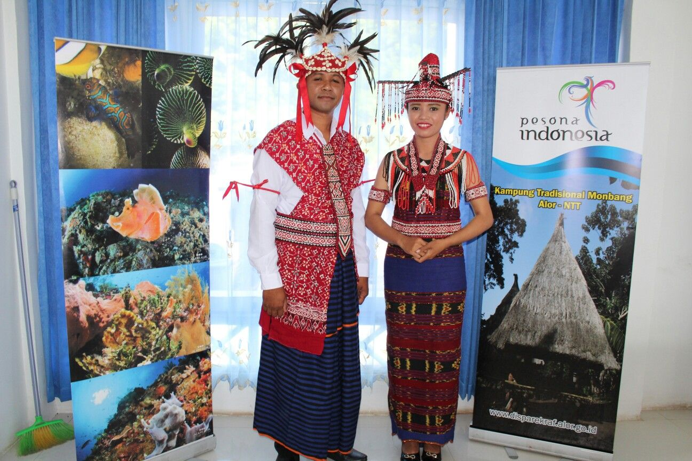
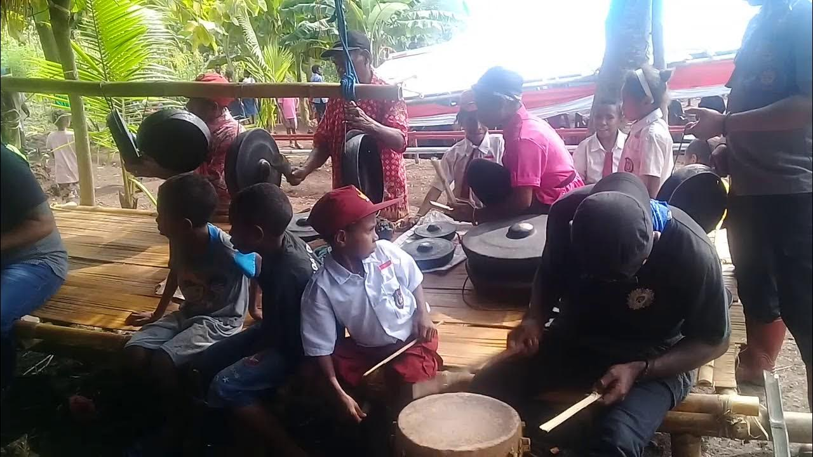

🏠 Rumah Adat
Rumah adat Alor dibuat dari kayu dan bambu. Rumah ini menjadi tempat tinggal serta tempat berkumpul keluarga.

💃 Tarian Lego-Lego
Tarian Lego-Lego dilakukan bersama-sama sebagai lambang persatuan dan persahabatan.

🧵 Kain Tenun
Kain tenun Alor dibuat dengan motif yang indah dan menjadi kebanggaan masyarakat.

👘 Pakaian Adat
Pakaian adat digunakan saat upacara adat dan acara penting. Warnanya indah dan dihiasi kain tenun khas Alor.

🥁 Alat Musik Tradisional
Gong dan moko merupakan alat musik tradisional yang sering dimainkan dalam upacara adat.